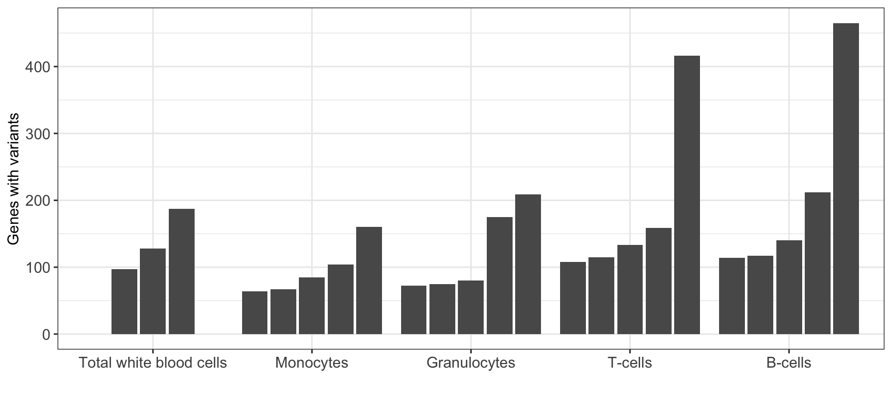
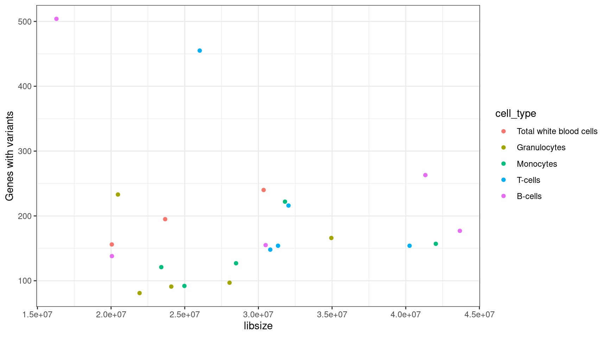
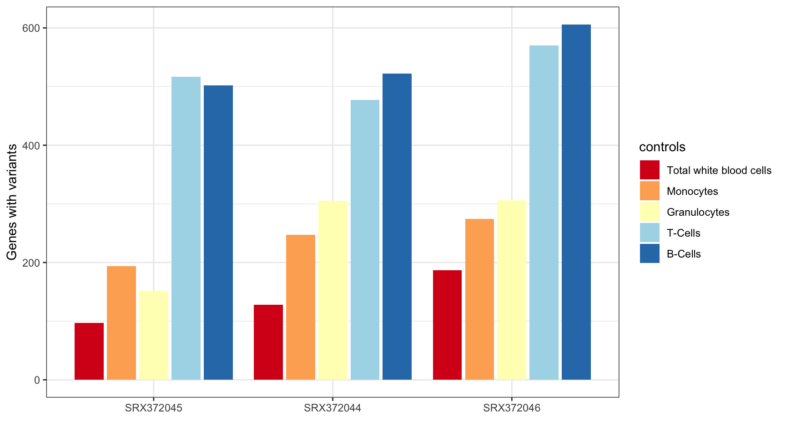

Last updated: 2020-05-08
Checks: 7 0
Knit directory: MINTIE-paper-analysis/
This reproducible R Markdown analysis was created with workflowr (version 1.6.1). The Checks tab describes the reproducibility checks that were applied when the results were created. The Past versions tab lists the development history.
Great! Since the R Markdown file has been committed to the Git repository, you know the exact version of the code that produced these results.
Great job! The global environment was empty. Objects defined in the global environment can affect the analysis in your R Markdown file in unknown ways. For reproduciblity it’s best to always run the code in an empty environment.
The command set.seed(20200415) was run prior to running the code in the R Markdown file. Setting a seed ensures that any results that rely on randomness, e.g. subsampling or permutations, are reproducible.
Great job! Recording the operating system, R version, and package versions is critical for reproducibility.
Nice! There were no cached chunks for this analysis, so you can be confident that you successfully produced the results during this run.
Great job! Using relative paths to the files within your workflowr project makes it easier to run your code on other machines.
Great! You are using Git for version control. Tracking code development and connecting the code version to the results is critical for reproducibility.
The results in this page were generated with repository version f504dcb. See the Past versions tab to see a history of the changes made to the R Markdown and HTML files.
Note that you need to be careful to ensure that all relevant files for the analysis have been committed to Git prior to generating the results (you can use wflow_publish or wflow_git_commit). workflowr only checks the R Markdown file, but you know if there are other scripts or data files that it depends on. Below is the status of the Git repository when the results were generated:
Ignored files:
Ignored: .DS_Store
Ignored: .Rhistory
Ignored: .Rproj.user/
Ignored: analysis/.DS_Store
Ignored: analysis/cache/
Ignored: data/.DS_Store
Ignored: data/RCH_B-ALL/
Ignored: data/leucegene/.DS_Store
Ignored: data/leucegene/KMT2A-PTD_results/.DS_Store
Ignored: data/leucegene/normals_controls_test_results/.DS_Store
Ignored: data/leucegene/salmon_out/
Ignored: data/leucegene/sample_info/KMT2A-PTD_8-2.fa.xls
Ignored: data/simu/.DS_Store
Ignored: output/Leucegene_gene_counts.tsv
Unstaged changes:
Modified: analysis/_site.yml
Note that any generated files, e.g. HTML, png, CSS, etc., are not included in this status report because it is ok for generated content to have uncommitted changes.
These are the previous versions of the repository in which changes were made to the R Markdown (analysis/Leucegene_Normals.Rmd) and HTML (docs/Leucegene_Normals.html) files. If you’ve configured a remote Git repository (see ?wflow_git_remote), click on the hyperlinks in the table below to view the files as they were in that past version.
| File | Version | Author | Date | Message |
|---|---|---|---|---|
| html | a600688 | Marek Cmero | 2020-05-07 | Build site. |
| html | 1c40e33 | Marek Cmero | 2020-05-07 | Build site. |
| Rmd | bbc278a | Marek Cmero | 2020-05-07 | Refactoring |
| html | 87b4e62 | Marek Cmero | 2020-05-07 | Build site. |
| Rmd | af503f2 | Marek Cmero | 2020-05-07 | Refactoring |
| html | 5c045b5 | Marek Cmero | 2020-05-07 | Build site. |
| html | 90c7fd9 | Marek Cmero | 2020-05-06 | Build site. |
| Rmd | ff4b1dc | Marek Cmero | 2020-05-06 | Leucegene results |
| html | 358aa53 | Marek Cmero | 2020-05-04 | Build site. |
| Rmd | 453d754 | Marek Cmero | 2020-05-04 | Added controls comparison in normals analysis. Added variant class collation function. Added variant summary for |
| html | 4a5d6ae | Marek Cmero | 2020-05-01 | Build site. |
| Rmd | 9556ebb | Marek Cmero | 2020-05-01 | Added leucegene normals analysis. Added expressed genes analysis to leucegene gene expression analysis. |
# util
library(data.table)
library(dplyr)
library(here)
library(stringr)
# plotting
library(ggplot2)options(stringsAsFactors = FALSE)source(here("code/leucegene_helper.R"))Here we generate the results presented in the MINTIE paper, of the method run on a set of non-cancer samples obtained from Leucegene.
# load MINTIE results from leucegene normals
normals_results_dir <- here("data/leucegene/normals_results")
normals_results <- list.files(normals_results_dir, full.names = TRUE) %>%
lapply(., read.delim) %>%
rbindlist() %>%
filter(logFC > 5)
# load cell type info and add to results
celltype <- read.delim(here("data/leucegene/sample_info/celltypes_info.tsv"))
normals_results <- inner_join(normals_results, celltype,
by = c("sample" = "SRX_ID"))Summary results for variants called by MINTIE on Leucegene normals.
summary_by_sample <- normals_results %>%
group_by(sample) %>%
summarise(variants = length(unique(variant_id)))
summary_by_class <- collate_vartypes(normals_results) %>%
group_by(class) %>%
summarise(variants = length(unique(variant_id))) %>%
mutate(fraction = variants / sum(variants))
print(summary_by_sample)# A tibble: 23 x 2
sample variants
<chr> <int>
1 SRX372044 181
2 SRX372045 137
3 SRX372046 213
4 SRX372047 639
5 SRX372048 1119
6 SRX372049 143
7 SRX372050 497
8 SRX372051 449
9 SRX372052 235
10 SRX372053 75
# … with 13 more rowsprint(summary_by_class)# A tibble: 4 x 3
class variants fraction
<chr> <int> <dbl>
1 Fusion 69 0.0117
2 Novel splice variant 1992 0.338
3 Transcribed structural variant 1234 0.210
4 Unknown 2593 0.440 MINTIE paper Figure 4 showing the number of variant genes called across the Leucegene normal samples.
results_summary <- get_results_summary(mutate(normals_results, group_var = cell_type),
group_var_name = "cell_type")
ggplot(results_summary, aes(cell_type, V1, group=sample)) +
geom_bar(position = position_dodge2(width = 0.9, preserve = "single"), stat = "identity") +
theme_bw() +
xlab("") +
ylab("Genes with variants")
Perform correlation calculation on the library size and number of variant genes found per sample.
Leucegene Gene Expression notebook must be run before this chunk to generate the expression counts matrix.
# load counts data, calculate library sizes and add to results summary
counts <- fread(here("output/Leucegene_gene_counts.tsv"))
libsizes <- apply(counts, 2, sum) %>% data.frame()
colnames(libsizes) <- "libsize"
libsizes$sample <- factor(rownames(libsizes),
levels = results_summary$sample)
results_summary <- left_join(results_summary, libsizes, by ="sample", "sample")
lib_var_cor <- cor(results_summary$libsize, results_summary$V1, method = "spearman")
print(paste("Spearman correlation between library size and variant genes called:", lib_var_cor))[1] "Spearman correlation between library size and variant genes called: 0.140845074722306"ggplot(results_summary, aes(libsize, V1, colour = cell_type)) +
geom_point() +
theme_bw() +
ylab("Genes with variants")
Proportion of protein coding genes observed in the MINTIE results.
# load CHESS gene reference containing gene types
chess_genes <- read.delim(gzfile(here("data/ref/chess2.2.genes.gz")))
# join gene info with results and summarise by gene type
results_by_gene <- get_results_by_gene(normals_results)
gene_count <- left_join(results_by_gene, chess_genes, by = c("gene" = "Gene_Name")) %>%
group_by(Gene_Type) %>%
summarise(n_genes = length(unique(gene))) %>%
data.table()
n_protein_coding <- gene_count[gene_count$Gene_Type == "protein_coding", "n_genes"]
print(paste("proportion of protein coding genes =", n_protein_coding / sum(gene_count$n_genes)))[1] "proportion of protein coding genes = 0.81547619047619"MINTIE Supplementary Figure 3 showing variant genes called in Leucegene Total White Blood Cell samples with different cell types as control groups.
# get TWBC results
controls_comp <- normals_results[normals_results$cell_type == "Total white blood cells",]
controls_comp$controls <- "twbc"
controls_comp$cell_type <- NULL
# load comparisons against all other controls
controls_test_dir <- here("data/leucegene/normals_controls_test_results")
controls_comp <- load_controls_comparison(controls_test_dir) %>%
rbind(controls_comp, .)
results_summary <- get_results_summary(mutate(controls_comp,
group_var = controls),
group_var_name = "controls")
print("Total variant genes called using different controls:")[1] "Total variant genes called using different controls:"print(results_summary) sample controls V1
1 SRX372045 bc 345
2 SRX372044 bc 365
3 SRX372046 bc 443
4 SRX372045 gran 130
5 SRX372046 gran 247
6 SRX372044 gran 279
7 SRX372045 mono 138
8 SRX372044 mono 187
9 SRX372046 mono 192
10 SRX372044 tc 329
11 SRX372045 tc 378
12 SRX372046 tc 419
13 SRX372045 twbc 156
14 SRX372044 twbc 193
15 SRX372046 twbc 233ggplot(results_summary, aes(sample, V1, fill=controls)) +
geom_bar(position=position_dodge2(width=0.9, preserve="single"), stat="identity") +
theme_bw() +
xlab("") +
ylab("Genes with variants") +
scale_fill_brewer(palette = "RdYlBu",
labels = c("mono" = "Monocytes",
"twbc" = "Total white blood cells",
"gran" = "Granulocytes",
"tc" = "T-Cells",
"bc" = "B-Cells"))
sessionInfo()R version 3.5.1 (2018-07-02)
Platform: x86_64-apple-darwin15.6.0 (64-bit)
Running under: macOS 10.14.6
Matrix products: default
BLAS: /Library/Frameworks/R.framework/Versions/3.5/Resources/lib/libRblas.0.dylib
LAPACK: /Library/Frameworks/R.framework/Versions/3.5/Resources/lib/libRlapack.dylib
locale:
[1] en_AU.UTF-8/en_AU.UTF-8/en_AU.UTF-8/C/en_AU.UTF-8/en_AU.UTF-8
attached base packages:
[1] stats graphics grDevices utils datasets methods base
other attached packages:
[1] ggplot2_3.1.0 stringr_1.4.0 here_0.1 dplyr_0.8.1
[5] data.table_1.12.0
loaded via a namespace (and not attached):
[1] Rcpp_1.0.1 RColorBrewer_1.1-2 plyr_1.8.4
[4] compiler_3.5.1 pillar_1.3.1 later_1.0.0
[7] git2r_0.26.1 workflowr_1.6.1 tools_3.5.1
[10] digest_0.6.18 evaluate_0.13 tibble_2.1.1
[13] gtable_0.3.0 pkgconfig_2.0.2 rlang_0.4.2
[16] cli_1.1.0 yaml_2.2.0 xfun_0.5
[19] withr_2.1.2 knitr_1.22 fs_1.2.7
[22] rprojroot_1.3-2 grid_3.5.1 tidyselect_0.2.5
[25] glue_1.3.1 R6_2.4.0 fansi_0.4.0
[28] rmarkdown_1.12 purrr_0.3.2 magrittr_1.5
[31] whisker_0.3-2 backports_1.1.3 scales_1.0.0
[34] promises_1.1.0 htmltools_0.3.6 assertthat_0.2.1
[37] colorspace_1.4-1 httpuv_1.5.2 labeling_0.3
[40] utf8_1.1.4 stringi_1.4.3 lazyeval_0.2.2
[43] munsell_0.5.0 crayon_1.3.4